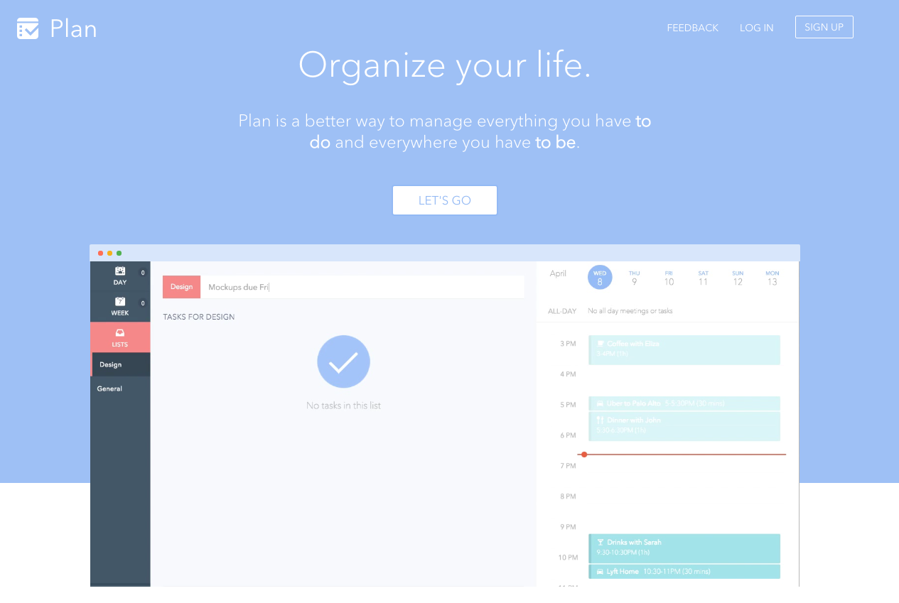

Rendering in Angular 2

@zizzamia
What is it rendering
HTML to native
Angular 2 can do a step forward
Angular 2 renderers
How this renders works

Separation = support for ...
Angular has a Renderer class
HTML and CSS code is parsed at compile time

This allows for full a understanding of the HTML code

Writing a custom renderer

Let's experiment!
Custom canvas experimentation (ReactCanvas)
code example canvas
Multiple renderers per app
- electron
- native script
Work in progress

show plan
- render in web
- render in electron
render a basic version in react native
the API for rendering is constantly changing
Recap
- the end goal is to have plug/play for support for angular2 renderers
- read this article to learn more … yearofmoo
- use this github project to get started to … https://github.com/matsko/angular2-multi-client
#ThankYou
Rendering in Angular 2